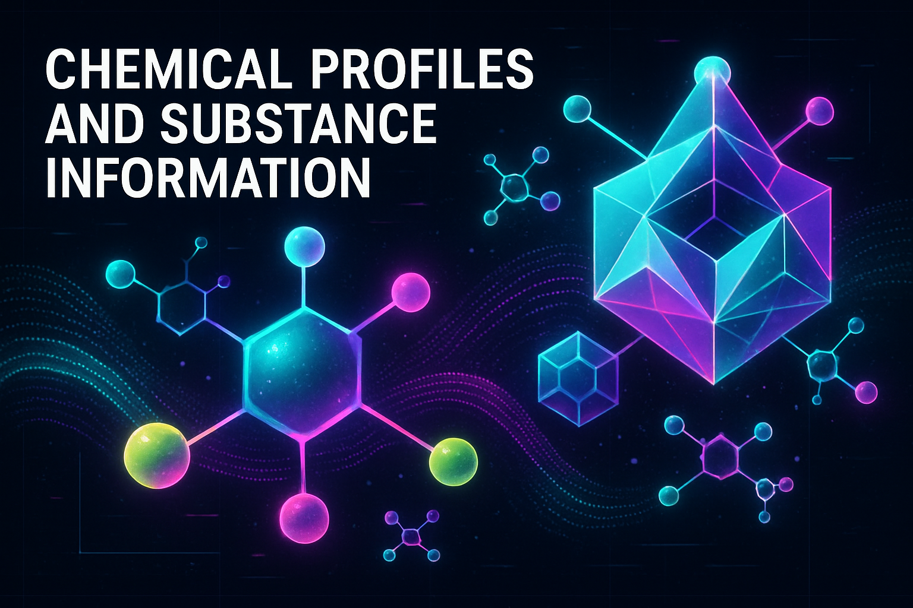

1142 LABS
Tomorrow's Solutions Today
Research
▾
⚗
Research Hub
Studies & breakthroughs
⬡
Chemicals DB
Full compound database
◆
Chem Log
Research session logs
About
▾
◈
The Creator
Cole EverDark
◉
Vision
Mission & future
◎
Creators
The persona matrix
▤
Archive
Logs & manifesto
Blog
▾
▤
Cole's Tab Corner
Full post archive
⚙
Calculators
Tools & utilities
◈
Resources
References & links
🕐
Toke Times
The ritual timeline
◼
Posters
EverDark visuals
◎
Network
Connect & follow
SYSTEM ONLINE
1142 · Research Archive · Classified
CHEMICALS
OF STUDY
[ 8 substances · psychedelic class · field notes ]

Substance Database · Field Notes · Research Log
COMPOUND PROFILES
CLASSIFIED · FOR EDUCATIONAL USE
ALL
CLASSIC
2C-x CLASS
TRYPTAMINES
DISSOCIATIVES
[ CLOSE ]